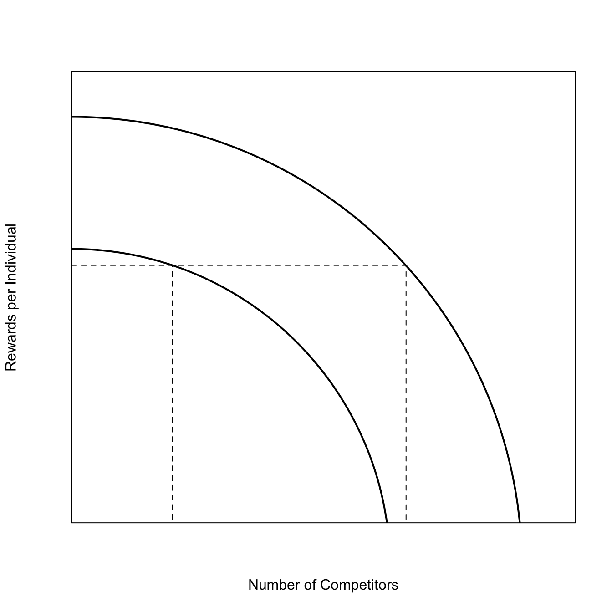

Malthus was central to the development of Darwin’s thinking. Darwin wrote in his (1876) autobiography: “In October 1838, that is, fifteen months after I had begun my systematic inquiry, I happened to read for amusement Malthus on Population, and being well prepared to appreciate the struggle for existence which everywhere goes on from long-continued observation of the habits of animals and plants, it at once struck me that under these circumstances favourable variations would tend to be preserved, and unfavourable ones to be destroyed. The results of this would be the formation of a new species. Here, then I had at last got a theory by which to work.”
A central tenet of the Malthusian thesis is that agricultural production increases linearly, while human populations increase geometrically (i.e., exponentially in continuous time). At some point, the geometric increase wins and immiseration ensues.
There is a determinism and passivity in the Malthusian account. The Danish economist Esther Boserup provided a more dynamic and adptationist account of the relationship between population and agricultural productivity. Population pressure induces innovation, which increases productivity, which induces greater innovation in a positive feedback system. Innovation in intensification by smallholders can be fantastically productive as noted by human ecologists such as Robert Netting (e.g., Netting 1993).
Boesrup suggests three main points:
Environmental limits on type of agriculture are relatively “elastic”
Increased production/area usually leads to decreased yield/labor
Labor minimization governs decision to intensify
You get more production, but you have work much harder to produce it. People only intensify when they must.
R. D. Lee (1986) and Wood (1998) have both noted that population can behave in both Malthusian and Boserupian manners. Wood refers to the “MaB Ratchet” (MaB=Malthus and Boserup). Malthusian pressure incites Boserupian innovation, relaxing negative feedback and allowing further population growth. While a population is undergoing a Boserupian expansion, quality of life improves. Alas, given enough time, the population will always return to “the same level of marginal immiseration.” (Wood 1998: 114)
Wood (1998) summarized the important issues in population regulation for anthropological applications. He asks five questions:
Is the growth of preindustrial populations “regulated” in any meaningful sense of the word?
Is there an optimal population size, and do preindustrial populations tend to equilibrate at the optimum?
What is the relationship between population growth and economic change?
What are the implications of population growth and economic change for individual health and well being?
What is the role of crisis mortality in preindustrial population dynamics?
M. N. Cohen, Armelagos, and Larsen (1984) and M. N. Cohen (1989) have argued that health declined precipitously with the emergence of agriculture. They coin the term Neolithic Paradox which is characterized by several features:
deterioration in nutrition
deterioration in general health
increase in infectious disease
exponential population growth
Wood et al. (1992) and Wood (1998) suggest that the evidentiary basis for the Neolithic Paradox is lacking. It is rather immediately clear from the figures of long-term human population dynamics that point 4 is simply not true. The left tail of apparently stalled population growth extends well beyond the Neolithic. It is also interesting to compare this to the sometimes rapid growth of modern hunter-gatherers who nonetheless lack healthcare, etc., a point noted by Hill and Hurtado (1996) in their masterful book on hunter-gatherer demography.
Boserup: “The power of ingenuity would always outmatch that of demand.” This is a very adaptationist sentiment!
7.2 Mechanistic Models of Population Regulation
In a series of papers, Shripad Tuljapurkar and his students have developed a mechanistic model of resource-restricted human population dynamics that links agricultural inputs such as the amount of arable land and the productivity of the land, human nutritional requirements (and the resiliency of people when they find themselves living (chronically or acutely) below their requirements, age-specific mortality and fertility rates. The models are extremely technically demanding but the insights that they yield warrant our exploring them, at least in a broad overview.
Their models were developed to understand the peopling of Oceania, Hawai’i in particular. The model accounts for the amount of available food energy as a function of (1) available land, (2) rainfall, (3) the age-structure of the human workforce, (4) the amount of time spent in productive agricultural labor.
The model includes realistic demography. Mortality and fertility are age-specific and both depend upon the energy intake. If the available energy is less than required at baseline, then survival and fertility are lower than their baseline values. This is measured by the food ratio (\(\hat{E}\)), which is simply “the number of calories available to consume in a given year relative to the number of calories needed to maximize survival and fertility.” (Lee & Tulja 2009:179). The shape of the decline in fertility and survival as the food ratio declines is estimated from demographic studies of populations at or near starvation.
This model has an equilibrium, like the logistic model. However, note the fundamental difference between the equilibrium of this model and that of the logistic. In the Tuljapurkar model, the carrying capacity is an emergent property of the model. It depends on the various inputs and it will be different depending upon choices that are made that correspond to real choices that human populations make. The equilibrium of the logistic model is imposed; it does not arise through the mechanisms of mortality and fertility.
One of the key findings of this model is that hunger emerges in the equilibrium. This is a fairly Malthusian result. There is less food than required for people to not go hungry, but there is still enough to sustain an equilibrium population.
Changing input parameters of the model has different effects on the equilibrium. Increasing agricultural productivity or the amount of time spent working on agricultural production increases the food ratio, while keeping the population growth rate largely unchanged. Increasing baseline survival increases the food ratio but decreases the population growth rate. Decreasing fertility only decreases the growth rate – the food ratio remains unchanged.
This is somewhat surprising, because one might imagine that all three inputs would work through common chains of causality in producing the equilibrium population size and food ratio. The differences arise because the slopes of the functions relating food availability and survival/fertility/productivity differ. Population growth – and thus population size – is more sensitive to some inputs than others, making the equilibria different depending upon which input is affected.
C. T. Lee and Tuljapurkar (2008) find that in expanding populations (e.g., colonists to islands), crop yield is the most important factor for determining both population growth and well-being. Increasing the mean (and decreasing the variance) of crop yield has the paradoxical effect of improving overall well-being but in driving the population to a state of limitation and scarcity more rapidly.
While agricultural productivity affects the food ratio, the shape of the vital rates’ response to food availability dominates the dynamics of the food ratio.
Variance in production can actually improve overall well-being but the cost of this improvement is episodic, widespread starvation.
Lee and Tuljapurkar conclude: “An important conclusion from our work is that human choices and the environment interact to shape the state of populations. The environment can have distinct effects depending on the specific variables upon which it acts. A population may respond to a harsh environment by increasing yield via improved agricultural methods or crops, or by increasing labor, or by controlling fertility. These choices are not equivalent, and their consequences depend on an intricate interplay between population age structure, food production, and hunger.”
Regarding Wood’s fourth question, C. O. Puleston and Tuljapurkar (2008) conclude: “In terms of well being, a population’s hunger level will decrease as its numbers increase towards an equilibrium level. Economic growth that alters the productivity of land (or otherwise increases the caloric returns to labor via other forms of economic activity) will result in an increase in equilibrium population size. Economic growth that alters demographic conditions will affect the equilibrium level of hunger. The tradeoff between population size and individual well being at equilibrium is sensitive to changes in technology.”
A troubling finding of C. Puleston, Tuljapurkar, and Winterhalder (2014) is their finding that a small population can grow at a relatively constant rate for hundreds of years before making a very rapid transition to the equilibrium. Growing populations experience higher levels of well-being. The approach to the equilibrium can be very abrupt, suggesting that people experiencing the transition may not notice the approach of the equilibrium.
7.2.1 The Basic Model
The food-limited demographic model of C. T. Lee and Tuljapurkar (2008) turns on a key quantity known as the food ratio (\(E\)), which represents the ratio of food-energy availability to population need. When the availability of food meets or exceeds the population requirements, \(E \geq 1\) and vital rates will be maximal. When \(E < 1\), people are hungry and the population is food-limited. Demographic rates such as age-specific survival probabilities and fertility rates are a function of the average value of the food ratio, \(\hat{E}\) or, more parsimoniously, average hunger.
The required consumption at age \(x\) is \(J \rho_x\), where \(J\) is the largest age-specific nutritional need. We set \(\rho_x =1\) for ages \(x\) where consumption equals \(J\), and \(\rho_x < 1\) for all other ages.
The total energetic consumption necessary for maximal vital rates, what C. T. Lee and Tuljapurkar (2008) call “ideal consumption,” is given by the summed product of the age-specific relative needs and the age-structure of the population:
Parameters: \(Y\) is yield/area, \(H\) is the maximum number of hours of production, \(k\) is the area worked per hour, \(\phi_x\) is the proportion of \(H\) at age \(x\), \(m_x(0)\) is maximum fertility (the zero indicates that this is the fertility of women age \(x\) when \(\log(E)=0\), i.e., when there is no hunger), \(p_x(0)\) is maximum survival, \(\alpha_x = dp_x/d \log(E)\) is the elasticity of survival at age \(x\), \(\gamma_x = dm_x/d \log(E)\) is the fertility elasticity at age \(x\). Throughout, parameters evaluated at their food-limited equilibria will be marked with hats (e.g., equilibrium food ratio is \(\hat{E}\)).
Here \(l_x\) is the survival to age \(x\), \(m_x\) is the age-specific fertility rate for age \(x\) and \(\lambda_1\) is the asymptotic multiplicative rate of increase of the population. Both survival and fertility are functions of average hunger, \(\hat{E}\).
As in classic stable population theory, the equilibrium age structure for age \(x\) is proportional to the survival to age \(x\) and discounted by the growth rate:
where \(c\) is a constant chosen so that the sum of the equilibrium vector of age classes \(\mathbf{u_1}\) is unity.
As in the classic theory, if the population is stationary (i.e., \(\lambda_1=1\)), the age structure is simply equal to the survivorship curve, though in this case it is the hunger-dependent survivorship. The dependence on hunger might change the age structure substantially if certain age classes (e.g., young children) are more vulnerable to the effects of hunger.
7.2.1.1 Age-Specific Schedules of Production and Needs
The total workforce is the inner-product of the age-schedule labor, \(\mathbf{\phi}\) and the age-structure of the population, \(\mathbf{n(t)}\). \(\phi_x \leq 1\) gives the proportion of \(H\) (maximum number of hours in production) contributed by an individual age \(x\). In a similar way, the total need is the inner product of the age-schedule of physiological need \(\mathbf{\rho}\) and the age-structure, \(\mathbf{n(t)}\). \(\rho_x \leq 1\) gives the proportion of the population that consume the largest nutritional need, \(J\).
The food ratio at time \(t\) is found by dividing the product of yield (\(Y\)), time worked (\(H\)), and efficiency (\(k\)) by the largest age-specific nutritional need (\(J\)). This ratio is scaled by the size of the workforce divided by the food need of the workforce:
\[
E(t)=\frac{Y H k}{J} \frac{\langle\boldsymbol{\phi}, \mathbf{n}(t)\rangle}{\langle\boldsymbol{\rho}, \mathbf{n}(t)\rangle}=\frac{Y H k}{J} \frac{N\langle\boldsymbol{\phi}, \mathbf{u}(t)\rangle}{N\langle\boldsymbol{\rho}, \mathbf{u}(t)\rangle}=\frac{Y H k}{J} \frac{\langle\boldsymbol{\phi}, \mathbf{u}(t)\rangle}{\langle\boldsymbol{\rho}, \mathbf{u}(t)\rangle}
\]
C. T. Lee and Tuljapurkar (2008) note that these equations simultaneously determine the equilibrium values of the growth rate, \(\hat{\lambda_1}\), and food ratio, \(\hat{E}\).
Some of the formal results of C. T. Lee and Tuljapurkar (2008):
The yield that is needed to achieve a food ratio of \(E=1\) is
At the equilibrium, where the population size is smaller than the size under the no-hunger model (i.e., \(Y < Y(0)\)), a growth rate less than the maximal (\(\hat{\lambda}_1 < \lambda_1(0)\)), and equilibrium hunger (\(\log(E) < 0\)), the food ratio is related to the scaled yield as:
\(K_1\) is a function of many parameters, but C. T. Lee and Tuljapurkar (2008) find that under a wide range of realistic parameter combinations, \(K_1 \approx 1\). This means that equilibrium hunger is approximately equal to the scaled yield. The common-sense interpretation of this is that if yield is cut from half of its ideal level, half the people would be hungry.
The scaled growth rate is related to \(\hat{E}\) as:
\(K_2 = \nu_G/T_G\), where \(\nu_G\) is a weighted average of the survival and fertility elasticities at \(\log(E) = 0\), \(T_G\) is the generation time (i.e., mean age of childbearing) at maximum fertility and survival. \(K_2\) is always positive, meaning that \(\hat{lambda}_1/ \lambda_1(0)\) is an increasing, concave function of \(\hat{E}\).
C. T. Lee and Tuljapurkar (2008) derive a food-dependent counterpart to the classic demographic result of Keyfitz (1977) who showed that the population growth rate scales with the net reproductive rate (NRR) raised to the inverse of the generation time. The food-dependent counterpart is:
where \(\lambda_1(0)\) is the maximum growth rate evaluated where \(E=0\) (i.e., everyone eats as much as they need – there is no hunger). In equation~\(\ref{eq:food-keyfitz}\), NRR scales as \(\hat{E}^{\nu_G}\). We would expect food-limited demographic rates, which determine NRR, to increase with increasing food availability with diminishing marginal gains. The curvature of this function is determined by the elasticities of the vital rates with respect to food availability (C. T. Lee and Tuljapurkar 2008).
7.2.1.2 Biological Consequences of Deprivation
First, perform a Taylor series expansion of life expectancy at birth around life expectancy at birth for the unlimited population:
where \(\mathbf{\beta(0)}\) is a vector of the survival elasticities evaluated at \(\log{E}=0\), and \(\mathbf{l(0)}\) is a vector of maximum survival.
Stylized assumptions: see their appendix A and put in details…
The age pattern for survival elasticities, \(\alpha_x\), is approximated as a constant value \(\alpha\) and for fertility elasticities, \(\gamma_x\), by a constant \(\gamma\).
This shows the very interesting result that the decline in life expectancy as scarcity increases (note that \(\log(\hat{E}) < 0\) when the population is food-limited) is larger for both high-life-expectancy populations and for populations where the variance in age at death is large. C. T. Lee and Tuljapurkar (2008) note that this latter condition applies to populations with high infant and child mortality and relatively even adult mortality Edwards and Tuljapurkar (2005).
This shows that the elasticity of TFR to a change in \(\hat{E}\) is simply \(\gamma\).
7.3 Commons and Governance
“Fifty years on, let’s stop the mindless invocation of Hardin” (Matto Mildenberger)
In his (1833) Two Lectures on the Checks to Population, William Forster Lloyd argued that on a “common”, costs are collective, while benefits are private. Pursuit of individual interest leads to over-exploitation. It is inevitable. These ideas circulated, particularly in economics (e.g., Scott Gordon, Mancur Olsen, Harold Demsetz). Then in 1968, a Stanford-trained ecologist wrote a highly-influential paper in the flagship journal Science. This paper contained not a single datum, nor was the argument especially original, as it was simply a re-telling of Forster Lloyd. Banner (2018) suggests the only thing that Hardin did was provide a catchy name for a phenomenon known for centuries.
The most obvious error that Hardin makes is that he assumes that access to the commons is completely open. As Kollock (1998) notes, this assumption is “neither necessary nor historically accurate”. Commons are frequently governed by very strict norms and customary laws.
Dasgupta (2001) also notes that Hardin gets his history (to the extent that the paper actually contains any) wrong, suggesting, “it is difficult to locate a passage of comparable length and fame that contains as many errors as the one above.”
Hardin was a xenophobe, nativist, and white nationalist. He was a major intellectual for the white-nationalist right. His notion of “passive genocide” is an idea that has transformed into the current notion of “Great Replacement.” In a 1991 essay, he wrote:
there are two forms [of genocide]. Active genocide is the sort one first thinks of — Hitler killing six million Jews. But there is another form — more subtle, less obvious, but potentially equally effective — that we may call passive genocide. The way this works was recently revealed in … remarks by Ali Akbar Hashemi Rafsanjani, the speaker of the Iranian parliament… Translated bluntly, ‘We Muslims are going to outbreed you.’ … If two cultures compete for the same bit of ‘turf’ (environment), and if one of the populations increases faster than the other, then year by year, the population that is reproducing faster will increasingly outnumber the slower one …This is passive genocide.
Near the end of his life, he wrote in a 1999 essay:
The Ford Foundation (and other organizations financed by American money) have allotted many millions of dollars to nondemocratic Latino organizations that are determined to revise the political structure of the United States… We have no reason to suppose that suicidal political organizations will never succeed in creating a chaotic NorteAmericano Central. The human species may not self-destruct; but what we like to call ‘human civilization’ may.
Note that the current Vice President of the United States has recently attacked the Ford Foundation in particular for its allegedly “Far Leftist” ideology as part of his pledge to “work to dismantle the institutions that promote violence and terrorism in our own country.” Hardin’s prejudices cast long shadows.
7.4 Ostrom
Commons are not free-for-alls, as demonstrated by the work of Lin Ostrom and her collaborators.
Ostrom’s Typology of Goods:
Subtractable
Non-Subtractable
Excludable
Private Goods
Club Goods
Non-Excludable
Common-Pool Resources
Public Goods
Common-Pool Resources: stocks of natural resources, grazing land, fisheries, forests, etc. Public Goods: Peace, security, knowledge, weather forecasts Private Goods: stuff you own Club Goods: theaters, daycares
In his important work on the economics of collective action, Olson (1965) made a number of generalizations about collective action. Olson’s conclusion about the viability of collective action, that has come to be known as the zero-contribution thesis, is that “unless the number of individuals in a group is quite small, or unless there is coercion or some other special device to make individuals act in their common interest, rational, self-interested individuals will not act to achieve their common or group interests.”
Ostrom (2000, 140) notes that the zero-contribution thesis is contradicted by empirical reality, writing “By now seven general findings have been replicated so frequently that these can be considered the core facts that theory needs to explain.” These include:
Subjects contribute 40-60% of their endowments in one-shot/first-round games
Contributions decay after first round but remain nonzero
Believers in others’ cooperative intentions contribute more
Learning the game better leads to more cooperation, not less
Face-to-face communication increases cooperation
Players pay to punish cheaters
Context (like framing) matters
7.4.1 Managing the Commons
Ostrom’s Design Principles of successful commons management are bottom-up, emerging from the people engaged in using the resources (Ostrom 2015).
Ostrom’s Design Principles:
Define clear group boundaries
Match rules governing use of common goods to local needs and conditions
Ensure that those affected by the rules can participate in modifying the rules
Make sure the rule-making rights of community members are respected by outside authorities
Develop a system, carried out by community members, for monitoring members’ behavior
Use graduated sanctions for rule violators
Provide accessible, low-cost means for dispute resolution
Build responsibility for governing the common resource in nested tiers from the lowest level up to the entire interconnected system
A thing that we learn from subsistence populations is that open access does not necessarily lead to depression. Property rights generally thought of as key to avoiding tragedies of the commons. This includes Ostrom (2015). It’s her first design principle! However, pastoralists, artisanal fishermen, hunter-gatherers all require more territory than can be defended economically, so the idea of property rights does not make sense in many traditional subsistence economies.
Pastoralists often blamed for land degradation. However, they are pretty much never to blame. More the type of agricultural over-exploitation discussed by Lansing in Bali (e.g., Lansing 1991). Pastoralist land increasingly circumscribed. Migration from agricultural areas and cities. Extensive observations suggest that pastoralists often manage their common resources very effectively (Johnson 1993).
Moritz et al. (2018) note that, in fact, many of these open-access subsistence systems remain resilient without access restrictions. They present a theoretical model that specifies when open access does not lead to resource over-exploitation.
Mortiz et al.’s model suggests the following features which allow open-access systems to not become depleted:
Benefits of defense outweighed by costs
Ideal Free Distribution (IFD)
High resource renewal rate
Information freely shared
Niche construction of more favorable resource regimes
Nonlinear feedback (i.e., coupling)
Development of shared norms
The Ideal Free Distribution (IDF) is essentially a formalization of the common-sense rule that organisms should settle a heterogeneous landscape in proportion to the resource availability.
### Ideal Free Distributiong <-seq(0,sqrt(1/5),length=200)h <-sqrt(1-(5*g^2))hf <-function(g,a=1) sqrt(a-(5*g^2))## derivativefp <-function(g) -5*g/sqrt(1-5*g^2)## will give warnings; doesn't matterplot(g,hf(g), type="l", lwd=2, axes=FALSE, frame=TRUE, yaxs="i", xaxs="i", ylim=c(0.1,1.1), xlim=c(0,0.5), xlab="Number of Competitors", ylab="Rewards per Individual")lines(g,hf(g,a=0.5), lwd=2)# used locator() to find tangentssegments(0,hf(0.1,a=1/2),0.3319867,hf(0.1,a=1/2), lty=2)segments(0.3319867,0,0.3319867,0.6714605, lty=2)segments(0.1,0,0.1,hf(0.1,a=1/2),lty=2)

Another important idea from Ostrom: Commons problems arise in part because of a failure to recognize larger systems in which they are embedded (Ostrom 2009).
7.5 How Many People Can the Earth Support?
Where does the Carrying Capacity come from? Presumably, \(K\) ultimately arises from resource limitation. The most likely form of resource limitation, particularly for humans, is food. We see that people live at very different densities depending upon their subsistence economy. This is indirect evidence that food limitation at least plays a substantial role in determining human population size. Joel Cohen explored this idea extensively in his masterful (1995) book, How Many People Can the Earth Support?(J. E. Cohen 1996).
One of the key debates that Cohen describes in his book relates to the response of human populations to increased population density. Cohen concludes that the answer to the question that defines his book, How Many People Can the Earth Support?, depends on several things. Fundamentally, the answer depends upon individual and collective human decisions. There is no simple answer. Cohen suggests a dinner table metaphor to understand how we might increase the carrying capacity of Earth. Three things to consider for how to increase the total carrying capacity of Earth are:
Make a bigger pie: Increase human productive capacities through technology and innovation.
Put fewer forks on the table: Reduce numbers and expectations of people through such means as family planning and vegetarian diets.
Teach better manners: Change the terms of people’s interactions through improved planning and government to enhance social justice.
Some of these are rather more difficult to achieve than others.
Banner, Stuart. 2018. “The Banality of the Commons: Efficiency Arguments Against Common Ownership Before Hardin.”Theoretical Inquiries in Law 19 (2): 395–407. https://doi.org/10.1515/til-2018-0021.
Cohen, J. E. 1996. How Many People Can the Earth Support? New York: Norton.
Cohen, M. N. 1989. Health and the Rise of Civilization. New Haven: Yale University Press.
Cohen, M. N., G. J. Armelagos, and C. S. Larsen. 1984. Paleopathology at the Origins of Agriculture. Orlando, FL: Academic Press.
Edwards, R. D., and S. Tuljapurkar. 2005. “Inequality in Life Spans and a New Perspective on Mortality Convergence Across Industrialized Countries.”Population and Development Review 31 (4): 645–74. https://www.jstor.org/stable/3401520.
Hill, K., and A. M. Hurtado. 1996. Ache Life History. New York: Aldine de Gruyter.
Johnson, Douglas L. 1993. “Nomadism and Desertification in Africa and the Middle East.”GeoJournal 31 (1): 51–66. https://doi.org/10.1007/BF00815903.
Keyfitz, N. 1977. Introduction to the Mathematics of Populations. 2nd ed. Menlo Park: Addison-Wesley.
Lansing, John Stephen. 1991. Priests and Programmers : Technologies of Power in the Engineered Landscape of Bali. Princeton, NJ: Princeton University Press.
Lee, Charlotte T., and Shripad Tuljapurkar. 2008. “Population and Prehistory I: Food-Dependent Population Growth in Constant Environments.”Theoretical Population Biology 73 (4): 473–82. https://doi.org/10.1016/j.tpb.2008.03.001.
Lee, Ronald D. 1986. “Malthus and Boserup: A Dynamic Synthesis.” In The State of Population Theory, edited by D. Coleman and R. Schofield, 96–130. New York: Blackwell.
Moritz, Mark, Roy Behnke, Christine M. Beitl, Rebecca Bliege Bird, Rafael Morais Chiaravalloti, Julia K. Clark, Stefani A. Crabtree, et al. 2018. “Emergent Sustainability in Open Property Regimes.”Proceedings of the National Academy of Sciences 115 (51): 12859–67. https://doi.org/10.1073/pnas.1812028115.
Netting, R. M. 1993. Smallholders, Householders: Farm Families and the Ecology of Intensive, Sustainable Agriculture. Stanford: Stanford University Press.
Olson, M. 1965. The Logic of Collective Action: Public Goods and the Theory of Groups. Cambridge: Harvard University Press.
Ostrom, Elinor. 2000. “Collective Action and the Evolution of Social Norms.”The Journal of Economic Perspectives 14 (3): 137–58. http://www.jstor.org/stable/2646923.
———. 2009. “A General Framework for Analyzing Sustainability of Social-Ecological Systems.”Science 325 (5939): 419–22. https://doi.org/10.1126/science.1172133.
———. 2015. Governing the Commons: The Evolution of Institutions for Collective Action. Canto Classics. Cambridge: Cambridge University Press. https://doi.org/10.1017/CBO9781316423936.
Puleston, C. O, and S. Tuljapurkar. 2008. “Population and Prehistory II: Space-Limited Human Populations in Constant Environments.”Theoretical Population Biology 74 (2): 147–60. https://doi.org/10.1016/j.tpb.2008.05.007.
Puleston, C., S. Tuljapurkar, and B. Winterhalder. 2014. “The Invisible Cliff: Abrupt Imposition of Malthusian Equilibrium in a Natural-Fertility, Agrarian Society.”PloS ONE 9 (1): 13. https://doi.org/10.1371/journal.pone.0087541.
Wood, J. W. 1998. “A Theory of Preindustrial Population Dynamics: Demography, Economy, and Well-Being in Malthusian Systems.”Current Anthropology 39 (1): 99–135. https://doi.org/10.1086/204700.
Wood, J. W., G. R. Milner, H. C. Harpending, and K. M. Weiss. 1992. “The Osteological Paradox: Problems of Inferring Prehistoric Health from Skeletal Samples.”Current Anthropology 33 (4): 343–70. http://www.jstor.org/stable/2743861.